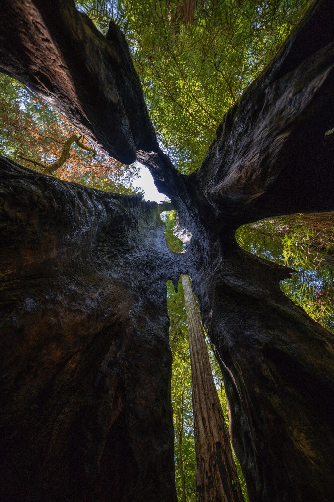

Fine Art Photography
Atmosphere.
Silence.
Wild light.
California landscapes and fleeting moments shaped by fog, weather, coastlines, forests, and sky.
The Work
Collections
A series of visual rooms, each shaped by a different kind of place, weather, and light.
Featured Work
Slow moments,
made permanent.
Each photograph begins with waiting: for fog to open, the moon to rise, a bird to cross the frame, or the last light to find the landscape.

About
Photographs shaped by patience and place.
Rizzvisuals is the work of Northern California photographer Ian Rizzari. The collection follows the changing atmosphere of the West—from coastal fog and ancient forests to mountain light, night skies, wildlife, and weather.
The goal is simple: preserve moments that would otherwise disappear within seconds.
Explore available prints ↗Fine Art Prints
Bring the landscape home.
Selected photographs are available through the Rizzvisuals SmugMug store.